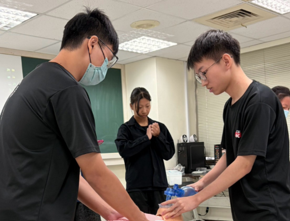
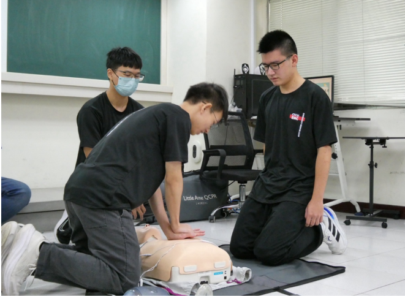
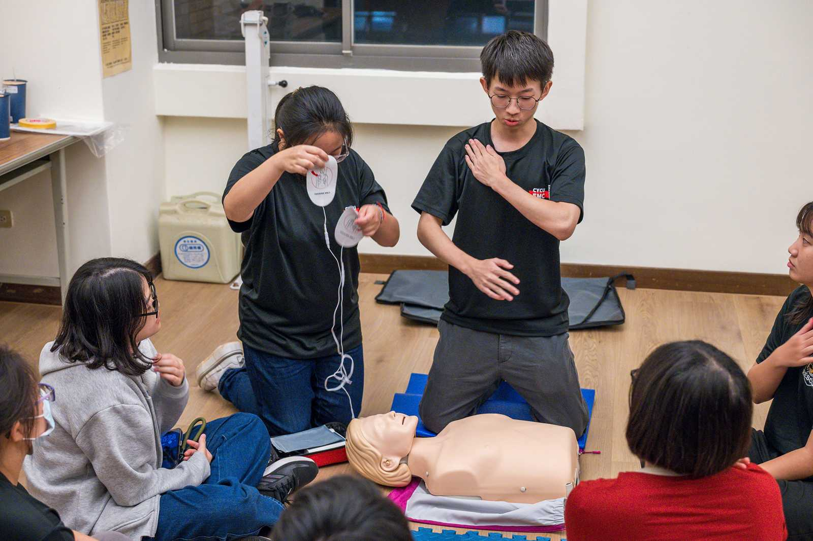

個人資訊
陳政維 CHEN, JENG-WEI
- 就讀
- 中原大學 資訊管理學系 大學部
- 狀態
- 在學 –
我是中原大學資訊管理學系的學生，持有 EMT-1 初級救護技術員證照。 課業之外，我在緊急醫療救護社與開源軟體開發社擔任幹部，也累積了校內外工讀與救護志工經驗。 我喜歡用程式和數位工具，把繁瑣的流程整理得清楚又有效率。
Designing Technology That Works for People
人格特質
- 外向性 13 / 50・很低
- 傾向安靜獨立，喜歡放慢節奏，與自己相處時最自在。
- 友善性 39 / 50・中等
- 在親和與客觀之間取得平衡，合作或競爭都能應付。
- 嚴謹性 33 / 50・中等
- 有一定的責任感，也懂得放鬆，能在努力與享受之間平衡。
- 神經質 31 / 50・偏低
- 冷靜平靜，抗壓力高，對應變化多能處之泰然。
- 開放性 39 / 50・偏高
- 充滿好奇心與想像力，喜歡探索新事物和抽象的概念。
優勢：擁有高度開放性與好奇心，擅長探索新事物。具備良好抗壓力與內省能力，在冷靜狀態下獨立思考，並能在合作與競爭中保持彈性平衡。
技能
程式技能
在資管系課程中學習程式設計：以 Python 處理資料與撰寫自動化小工具，用 Java 與 Kotlin 練習物件導向，並用 R 做統計分析與視覺化。
- Python
3/5 - Kotlin
4/5 - Java
4/5 - R Language
4/5
工具應用
在社團幹部工作中實際運用：以 Excel Power Query 整合名單、Word 製作文件、Notion 管理任務時程，並用 Canva 設計社群視覺。
- Excel
3/5 - Word
4/5 - Notion
5/5 - Canva
5/5
證照
EMT-1 初級救護技術員
具備到院前緊急救護的基本能力，包含生命徵象評估、CPR 與 AED 操作、創傷止血包紮等。
Gemini Certified University Student
Google 針對大學生的 Gemini 認證，證明能把生成式 AI 應用在學習與研究上。
Gemini Certified Educator
Google 的 Gemini 教育工作者認證，證明能把 Gemini 運用在教學設計與教學實務中。
Gemini Certified Faculty
Google 針對大專院校教學人員的 Gemini 認證。
Google 認證教育工作者第 1 級
熟悉 Google Workspace for Education 的基本工具，並能應用在教學與協作中。
Google 認證教育工作者第 2 級
能進階整合 Google 工具，設計數位學習活動。
NVIDIA Fundamentals of Deep Learning
NVIDIA 深度學習機構（DLI）課程證書，涵蓋神經網路訓練、卷積神經網路與遷移學習等基礎。
我的證照分成兩個方向：EMT-1 讓我具備到院前緊急救護的能力，也是投入救護志工的基礎；Google、Gemini 與 NVIDIA 的認證，則是我在課業之外主動學習生成式 AI、數位教學工具與深度學習的成果。考取這些證照的過程讓我養成自主學習的習慣，也讓我更清楚，科技與專業知識都應該用來解決真實的需求。
社團經驗
緊急醫療救護社
介紹
急救社的宗旨是急救推廣、志工服務、人才培育與救護實踐。因為認同急救社的行動而接下幹部，持續學習團隊協作，也一起優化組織制度。
工作內容
整理社員名單與活動清單、活動申請、製作活動簽到表、全人認證申請。
工具應用
- Excel Power Query：比對、過濾與整合社員名單，並從活動報名表單的回覆比對社員身分。
- Word：製作活動簽到表與競賽相關文件。
- Notion：整理幹部事項的流程與做法，並管理任務時程。
活動照片



開源軟體開發社
介紹
開源軟體開發社是一群對軟體開發有興趣的人組成的社群，社群媒體是社團的中心。身為美宣，透過貼文塑造社團形象，並凝聚社員的認同感。
工作內容
製作 IG 貼文、設計社服。
工具應用
- Canva：設計一套符合社團元素的設計語言模板。
貼文作品
工作經驗
從高中教務處文書、超商門市、文創園區展場到系辦工讀，每份工作都讓我看見不同場域的運作方式。在門市，我學會面對顧客與突發狀況時先穩住情緒、再解決問題；在行政工作中，則體會到細節與流程對效率的影響。這些經驗讓我明白，好的服務和系統都必須從使用者的需求出發，這也是我想用科技改善流程的起點。
志工服務經驗
參與運動會救護與淨溪等志工服務，讓我把在急救社學到的知識真正用在現場。運動會救護需要在人潮與壓力中冷靜判斷，淨溪活動則讓我意識到環境議題需要每個人一起行動。服務過程中我學到，助人不只是付出時間，更要傾聽與觀察對方真正的需要；這份體會也提醒我，未來設計任何科技時都要以人為本。